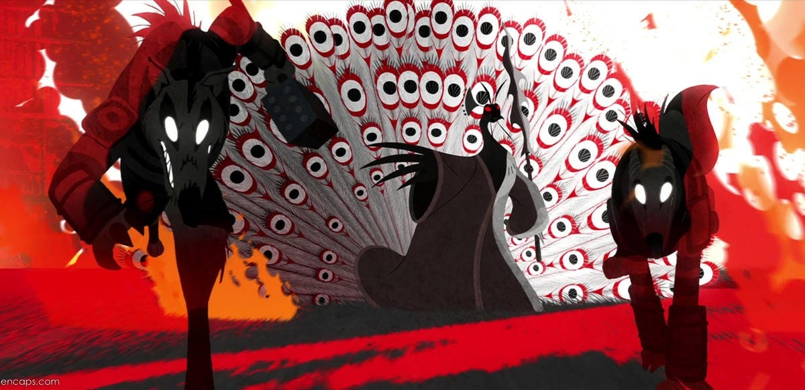

Kung Fu Panda 2 é melhor que o 1? Críticos e fãs debatem no multiverso

Lançado em 2011, Kung Fu Panda 2 conseguiu o que poucas continuações alcançam: aprofundar a mitologia de seu protagonista sem perder o carisma e o humor que consagraram o primeiro filme. Com a introdução do vilão Lord Shen, a obra da DreamWorks explorou temas maduros como luto, trauma de infância e a busca pela paz interior.
Diferente da jornada tradicional do "herói improvável" vista no primeiro longa, aqui Po enfrenta as consequências diretas de seu passado. As sequências de luta misturam kung fu tradicional com coreografias dinâmicas e o uso impecável de animação 2D estilizada nos flashbacks de memórias perdidas.
Para muitos críticos de cinema do multiverso geek, a trilha sonora de Hans Zimmer aliada à intensidade dramática do clímax no porto consagra o segundo filme como o ápice da franquia cinematográfica.